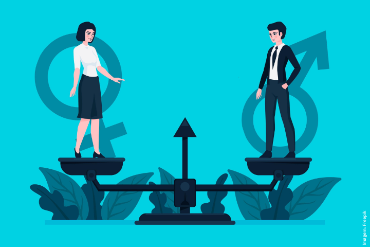

Central Four Square: Tudo sobre o Jogo
Desafios e Impactos da Desigualdade Racial na Sociedade
A desigualdade racial é um problema social persistente que afeta a distribuição de oportunidades, o acesso a recursos e a qualidade de vida de indivíduos e grupos, perpetuando disparidades históricas.
Ler Mais  SociologiaDesigualdade de Gênero: Barreiras e Impactos na Sociedade Contemporânea
A desigualdade de gênero é uma questão central na sociologia, referindo-se às disparidades de poder, oportunidades e tratamento entre homens e mulheres em diversas esferas da vida social.
Ler Mais Estrutura SocialRelações de Classes: Conflito, Mobilidade e Estrutura Social
Uma análise aprofundada sobre as classes sociais, suas interações, desigualdades e a dinâmica da estratificação, com base em perspectivas de Marx e Weber.
Leia Mais